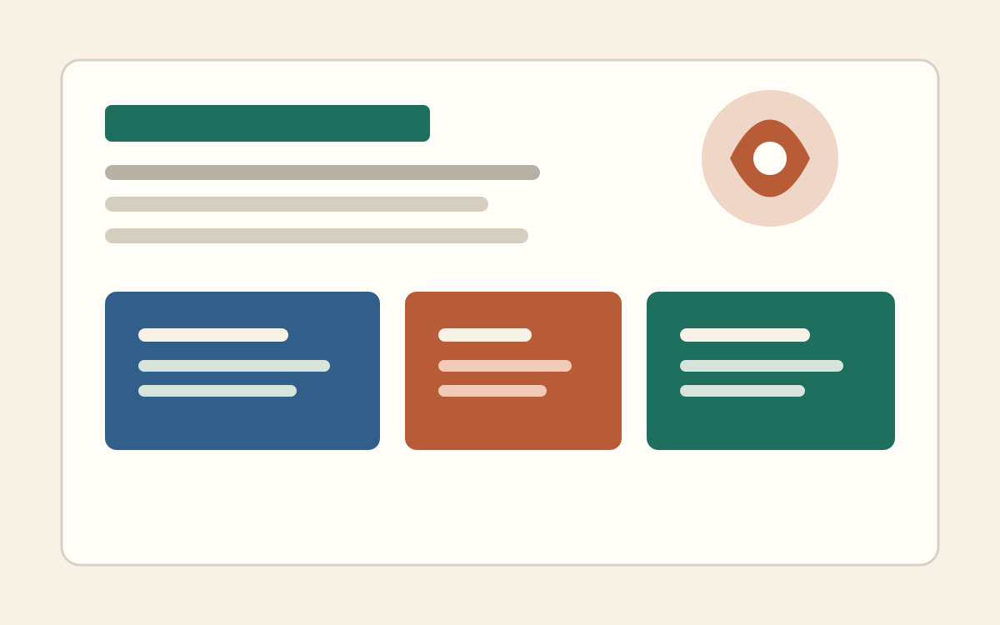

游戏文案策划 / 世界观叙事 / 编导脚本 / AI 协作
把世界观、剧情脚本和创作工具，整理成能落地、能展示、能复盘的游戏文案方案。
这个作品集会按游戏文案策划的不同能力方向展示：世界观与剧情叙事、编导脚本与录屏效果、AI 辅助创作流程。
世界观包装
剧情叙事
编导脚本
AI 工作流

Selected Work
代表作品
先按 3 个方向组织作品：世界观剧情叙事类、编导脚本效果类、AI 结合使用类。每一类都用详情页说明你的思路、产出和可查看材料。
Case Study
详情页怎么工作
上面的作品卡片已经可以点击进入二级详情页。你上传的 PDF、图片或文档截图，可以放进 assets/projects 文件夹，再在详情页里引用。
你以后怎么更新
在 GitHub 打开仓库，进入 assets/projects 上传你的作品文件；再进入 works 里的对应详情页，点铅笔图标编辑文字和文件链接，提交后网站会自动更新。
推荐展示方式
公开页面放项目背景、你的职责、核心思路和少量样稿；完整 PDF 可以用按钮下载。这样既能让 HR 快速读懂，也能保留完整作品证据。
已经建好的详情页
游戏剧情策划
编导脚本效果类
AI 结合使用类
Capabilities
能力模块
这部分给招聘方快速扫读，用具体工作能力替代空泛形容词。
世界观叙事
世界观包装、角色关系、剧情大纲、任务文本、信息释放节奏。
脚本编导
剧情脚本、分镜说明、镜头节奏、演出需求、录屏效果复盘。
文本表达
对白润色、角色语气、活动包装、系统文案、不同文本体裁切换。
AI 协作
资料整理、创意发散、版本对比、提示词设计、人工判断与二次编辑。
About
关于我
这里写成职业画像，不写散文。比如：我正在寻找游戏文案策划 / 剧情策划方向机会，擅长把设定、脚本和工具流程整理成清晰可执行的内容方案。
我适合的工作
世界观设定、剧情策划、任务文本、编导脚本、活动包装、AI 辅助内容生产。
我的工作方式
先确认目标和受众，再拆结构、写样稿、做版本对比，最后整理成团队能直接使用的文档。
我希望呈现的价值
不是只写好一段文本，而是让叙事内容、演出呈现和工具流程共同服务游戏体验。
Resume
简历与完整作品集
把 PDF 简历命名为 resume.pdf 放进这个文件夹，按钮就能下载。完整作品集可以命名为 portfolio.pdf，再把下面第二个按钮打开。